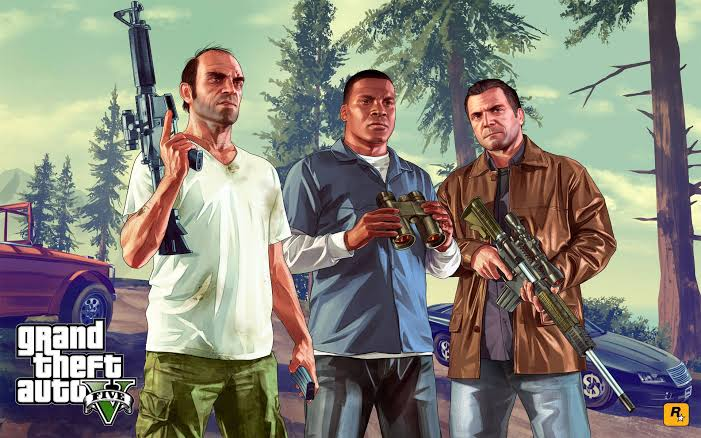

Gênero
Ação e Aventura
Ação em mundo aberto

Grand Theft Auto V apresenta uma cidade fictícia chamada Los Santos, inspirada em Los Angeles, onde o jogador acompanha a história de três protagonistas: Michael, Franklin e Trevor. Cada personagem possui uma personalidade, habilidades e acontecimentos próprios. A narrativa envolve assaltos planejados, perseguições policiais, conflitos entre criminosos e decisões que influenciam o desenvolvimento das missões. Além da história principal, o mundo aberto permite dirigir veículos, explorar a cidade e participar de diversas atividades.
Ação e Aventura
Pc, PlayStation 3, PlayStation 4, PlayStation 5 Xbox 360, Xbox One, Xbox Series X|S.
Mundo aberto, tiro em terceira pessoa e crime